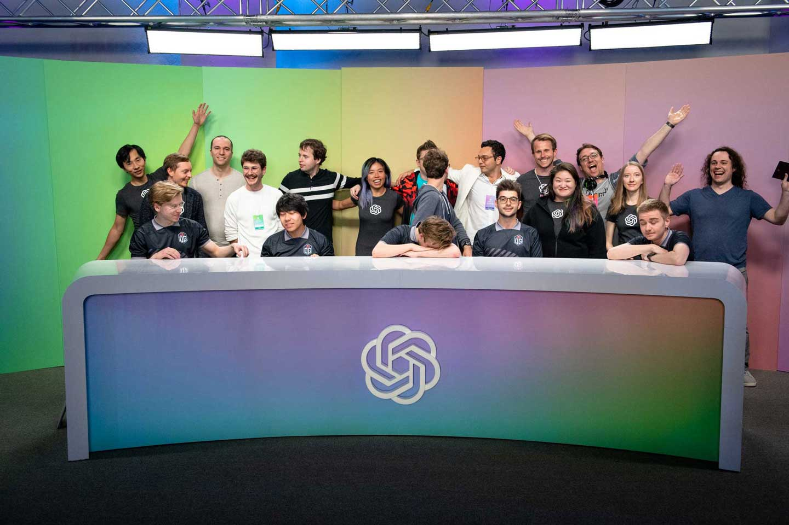

-

- 
Generative Pre-trained Transformer 3 (GPT-3) es un avance en modelos de lenguaje de la línea GPT-n desarrollado por OpenAI. Es el modelo con mayor capacidad en la actualidad. Es capaz de realizar múltiples tareas de lenguaje en el idioma inglés, con mayor precisión que sus predecesores y que cualquier otro modelo de lenguaje. Emplea tecnologías de redes neurales (NLP) y una arquitectura de deep learning que le permiten escribir cualquier texto, desde correos electrónicos, codificar usando CSS o Python, hasta artículos periodísticos con tan solo unas cuantas indicaciones.
GTP-3 es la tercera generación en modelos de predicción de lenguaje en la serie GTP-n. En junio de 2018 OpenAI publica un paper
sobre Pre-entrenamiento generativo (GP), un proceso que permitiría crear modelos con una mejor comprensión del lenguaje, sin la
necesidad de supervisión humana o intervención manual dependiente de tiempo.
En mayo del 2020 los investigadores describen el desarrollo de GPT-3, el cual es 2 órdenes de magnitud mayor en capacidad que el
GPT-2.
En junio del mismo año OpenAI anuncia el acceso a su API GPT-3 con fines de refozamiento y exploración de esta tecnología.
Desde setiembre del 2020 Microsoft posee el acceso exclusivo al sistema GTP-3, sin embargo la API sigue a disponibilidad del
público.


Riesgos
GPT-3 puede generar artículos de noticias
que al pasar por evaluadores humanos resultaron difíciles de
distiguir de artículos escritos por humanos.
Por ello, su ejecución ha sido calificada como potencial a
producir efectos nocivos los cuales incluyen desinformación, spam,
phishin, abuso de procesos gubernamentales y legales, escribir ensayos
académicos fraudulentos y ataques de ingeniería social por pretexteo.